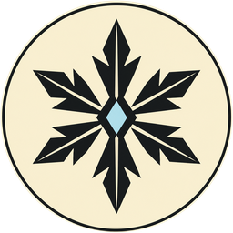
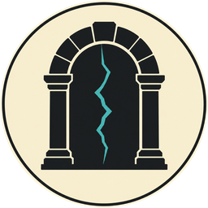

Magic is found, not handed out
Magic is meant to feel rare. Each school costs real skill credits, so a typical caster is one element plus Life, or two elements, and nobody has everything.
Six schools
- Fire
- Burst and burning, across an area. A specialist is a Pyromancer.
- Frost
- Control: slows and roots. A specialist is a Cryomancer.
- Storm
- Speed: instant strikes and haste. A specialist is a Stormcaller.
- Life
- Heals, cleanses and wards. A specialist is a Healer.
- Enchantment
- Bending bodies and weapons, weakening and silence. A specialist is an Enchanter.
- Rift
- Moving people: recall, blink, summons and gates. A specialist is a Gatekeeper.


How you learn a spell
Find a scroll
Spells aren't sold by a trainer. They turn up in the world.
Train the school
Spend skill credits and reach the rank the spell needs.
Read it
Read the scroll at a shrine or campfire.
Solve the key
The first spell of a school and tier has a key you work out by experiment. After that, you know it.
Ready it
Choose it at a shrine or campfire. You only hold a few at once, and Intellect sets how many.
Cast it
If you know the key, the spell works. Stronger spells also use up a reagent.
Magic that moves the world
Rift mages open the way across the realm, and travellers will need them. That's a reason to know one, and a reason to be one.
Planned design, not playable yet. The rules are decided. The numbers will change in testing. Icons are AI-assisted concept art.